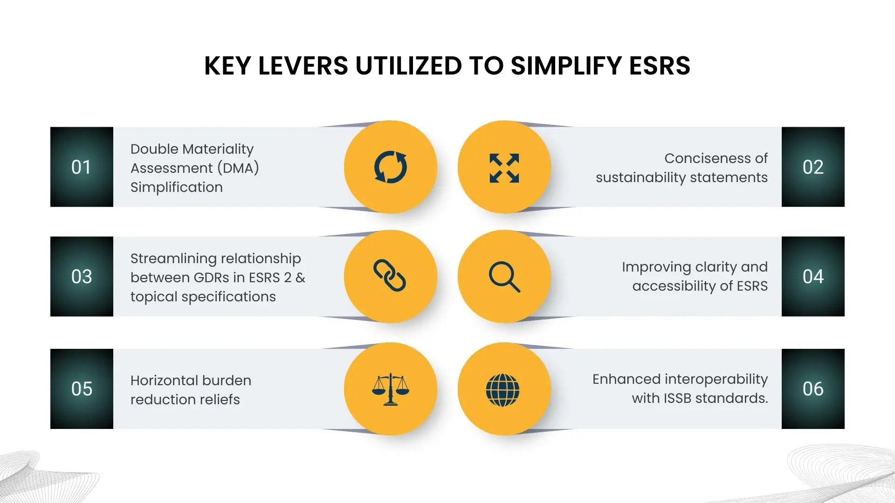

On 31st July 2025, the European Financial Reporting Advisory Group (EFRAG) released revised Exposure Drafts of the European Sustainability Reporting Standards (ESRS), introducing major simplifications for companies reporting under the Corporate Sustainability Reporting Directive (CSRD). The proposed amendments to the ESRS eliminate all voluntary disclosures and cut mandatory data points by 57%. Six key simplification levers have been used in this process, aiming to reshape how sustainability information will be reported.

Lever 1: Double Materiality Assessment (DMA) Simplification
Double materiality (covering both impact and financial perspectives) is central to ESRS, but its first implementation proved burdensome. Companies struggled with exhaustive checklists, excessive scoring, and unclear thresholds, often focusing more on process than on producing useful disclosures.
The amended ESRS Exposure Drafts (EDs) introduce key simplifications:
- Principle-based approach: More emphasis has been placed on fair presentation (relevance + faithful representation) to shift from “compliance” to outcome-focused reporting.
- Practical guidance: DMA should start with the business model (top-down), with proportionate evidence and sector/topic shortcuts where materiality is obvious.
- Clearer role of information materiality: All datapoints (including ESRS 2 general disclosures) are subject to materiality, with clarified “significance” criteria.
- Gross vs net impacts clarified: Guidance on considering mitigation/remediation actions in impact assessments.
- Reduced granularity: Flexibility to report at the topic or sub-topic level, avoiding unnecessary detail and the term “matter” has been replaced by “topic” for consistency.
- Streamlined topic list: Illustrative only, fewer levels, avoiding checklist-style assessments.
- Aggregation/disaggregation clarification: For example, avoiding site-by-site reporting were not meaningful.
Lever 2: Conciseness of sustainability statements
It has been observed that there is a huge variation in the size of sustainability statements across countries. Still, generally companies are struggling to tell their sustainability story and share it among stakeholders. As a result, publishing a sustainability report has been seen as a compliance exercise, when that was not the objective of introducing CSRD. Companies have faced duplication of content, using the sequence of disclosures in the Standard as an index very rigidly, hence failing to adapt it to the enterprise's circumstances. EFRAG is offering some flexibility as amendments to ESRS 1 General requirements and 2 General disclosures to counter these problems:
- Option of having an Executive Summary at the start of the Sustainability Statement.
- Emphasis on using appendices to display the most detailed/granular information, a separate appendix for EU Taxonomy disclosures and non-material matters.
- PATs (Policies, Actions, and Targets): No duplication of content of the same PATs in different parts of the sustainability statement; a policy covering different topics should be explained only once and PATs can be limited to a sub-topic without describing it at the topic level.
Lever 3: Streamlining the relationship between General Disclosure Requirements in ESRS 2 and topical specifications
One of the biggest burdens companies flagged in the first wave of ESRS reporting was the duplication of information between ESRS 2 General Disclosure Requirements (GDRs) and the detailed topical standards. Both ESRS 2 and the topical standards required disclosures on policies, actions, and targets (PATs), often at an overly granular level.
This led to duplication, excessive detail, and ambiguity, with some preparers feeling forced to describe PATs at the level of every single impact, risk, or opportunity (IRO). Overlaps also existed in governance, strategy, and IRO disclosures, where topical standards added specifications to ESRS 2. The result was reporting that was too detailed to be useful, and difficult to aggregate across topics.
What's changing in the exposure draft:
- ESRS 2 as the anchor: Cross-cutting GDRs are retained in ESRS 2 with a reduced number of mandatory datapoints.
- Topical standards simplified: Most of the mandatory PAT data points in topical standards are deleted or moved to Non-Mandatory Implementation Guidance (NMIG). Only the strictly essential datapoints remain.
- Topical specifications removed: Appendix C of ESRS 2, which duplicated topical specifications, is eliminated, with very few exceptions (e.g. resilience under E1 Climate).
- “If you have them” principle: PATs are only disclosed where they exist. Companies are not required to justify why a policy, or target doesn't exist or provide plans to implement one.
- Simplified format: Companies can use a tabular disclosure, listing material IROs and indicating where PATs are present or absent in a single datapoint.
This shift supports a substantial cut in mandatory datapoints, reduces duplication and unnecessary granularity and encourages principle-based, outcome-focused disclosures rather than a compliance-driven “tick-box” exercise.
Lever 4: Improving Clarity and Accessibility of ESRS
The 2023 ESRS Delegated Act mixed mandatory and non-binding content, creating confusion among preparers and auditors who were unclear how to treat “may disclose” datapoints. Some used them as a checklist of required disclosures, while others limited entity-specific disclosures to only those items. This inconsistency inflated the reporting burden and reduced relevance.
EFRAG's proposed changes in the exposure drafts to counter this issue:
- Eliminating “voluntary disclosure” to avoid misinterpretation: It will no longer be treated as either mandatory or as an informal checklist.
- Clear separation of mandatory vs. non-mandatory content
- Mandatory guidance (Application Requirements) is now placed directly under the relevant Disclosure Requirements.
- Non-mandatory material has been deleted from the EDs and shifted to the NMIG, except for Appendix A (list of possible topics).
- Streamlined the language, especially in ESRS 1 General Requirements, to improve readability and usability, while preserving continuity for early adopters
Lever 5: Horizontal burden reduction reliefs
EFRAG has proposed a set of horizontal simplifications across the ESRS exposure drafts to reduce reporting burden, drawing partly from the ISSB reliefs and adding new ones specific to ESRS.
-
Use of ISSB Reliefs (IFRS S1 & S2):
-
Adopt “undue cost and effort” relief for:
- Materiality assessment
- Value chain coverage & metrics
- Disclosure of ranges for financial effects
-
Excludes two ISSB reliefs:
- Omits Scope 3 relief (kept mandatory under ESRS)
- Withholding "commercially sensitive" opportunities (left to CSRD Omnibus revision).
-
Adopt “undue cost and effort” relief for:
-
Additional ESRS-specific Reliefs:
- Undue cost & effort extended to all metrics, even in own operations.
-
Financial effects disclosures: Two options have been proposed regarding financial effects disclosures.
- Option 1: Disclosure of qualitative and quantitative information but may omit quantitative information when measurement is highly uncertain or not supportable.
- Option 2: Disclosure of only qualitative information; quantitative information disclosure is voluntary.
- Metrics covering a partial scope are allowed when reliable data is unavailable, provided limitations and improvement plans are disclosed.
- Estimates vs direct data: Removes hierarchy requiring primary data first; reliability/practicability prioritized.
- Exclusion of non-material activities from calculation of metrics has been permitted.
- Resilience disclosures: Qualitative only (quantitative optional), limited to risks (not impacts/opportunities).
- Investments/plans: Only already-announced ones must be disclosed.
- Acquisitions/disposals: Subsidiaries included/excluded from subsequent period, with transparency on major transactions.
- Commercially sensitive information: Existing secrecy relief maintained; possible expansion tied to CSRD Omnibus.
-
Boundaries and Scope:
- Own operations: aligned with consolidated financial statements.
- GHG boundary: revised to match financial control approach (GHG Protocol & IFRS S2), improving comparability, with additional disclosure following an operational control approach in cases where financial control doesn't provide a fair representation.
- Value chain cap: Now tied to VSME voluntary standards (not LSME). Encourages estimates/secondary data where direct data is impractical.
Lever 6: Enhanced interoperability with ISSB
EFRAG's amendments aim to make ESRS more interoperable with ISSB's IFRS S1 (General Sustainability) and IFRS S2 (Climate). This is critical for companies subject to both EU (CSRD/ESRS) and global requirements, avoiding duplication and complexity.
-
Language Alignment
- ESRS 1, ESRS 2, and ESRS E1 revised to adopt the same wording as IFRS S1/S2 wherever possible.
-
Fair Presentation Framework
- Stronger emphasis on “fair presentation” aligned with IFRS S1.
-
Materiality
- Reinforced filter: only material information is reported.
- Aligns with IFRS financial materiality (while ESRS retains double materiality).
-
GHG Emissions Boundary
- Adopted the financial control approach, one of the IFRS S2 options.
-
Sector Guidance
- Reference to IFRS industry-based guidance (SASB + IFRS S2 industry metrics) made permanent, replacing ESRS sector standards.
-
ISSB Reliefs Incorporated
-
“Undue cost and effort” and other ISSB reliefs brought into ESRS, except:
- Scope 3 omission (kept mandatory in ESRS).
- Commercially sensitive information (left to CSRD Omnibus).
-
“Undue cost and effort” and other ISSB reliefs brought into ESRS, except:
-
Climate-Specific Alignment
- Terminology in ESRS E1 aligned with IFRS S2 on transition plans, scenario analysis, resilience, internal carbon pricing, Scope 3, and financial effects.
What should companies do now?
EFRAG encourages stakeholders to review the Exposure Drafts of the amended ESRS and complete the public consultation survey before 29 September 2025.
This is a critical opportunity to shape the future of sustainability reporting in Europe. Companies should at the same time start preparing for the upcoming reporting cycles by strengthening their ESG data systems and aligning with evolving CSRD requirements.
This is where ecoPRISM can help.
ecoPRISM stands at the forefront of sustainability, guiding companies through their ESG journey. Our SaaS platform simplifies ESG data collection, analysis, and reporting, enabling you to generate audit-ready reports aligned with CSRD and global standards. We deliver tailored insights and recommendations that empower you to make informed decisions and enhance ESG performance.
Whether you need to streamline CSRD compliance or implement a robust ESG reporting system, ecoPRISM provides the tools and expertise to move from compliance to leadership.